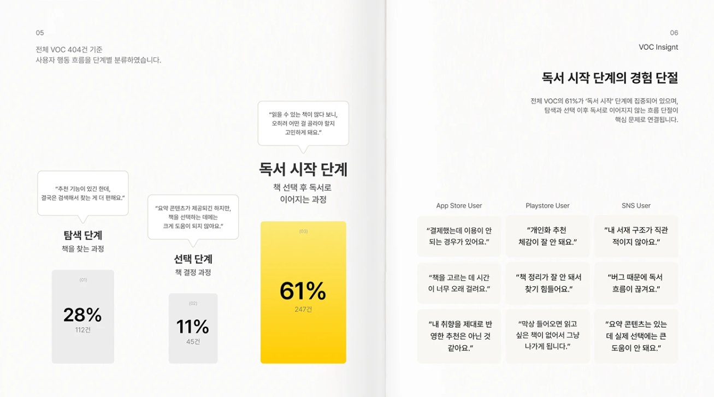
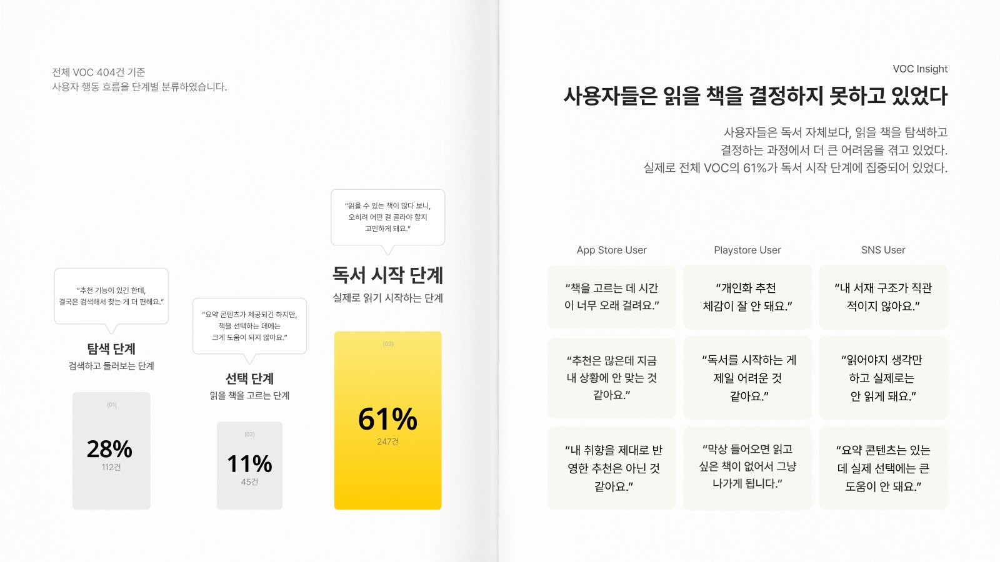
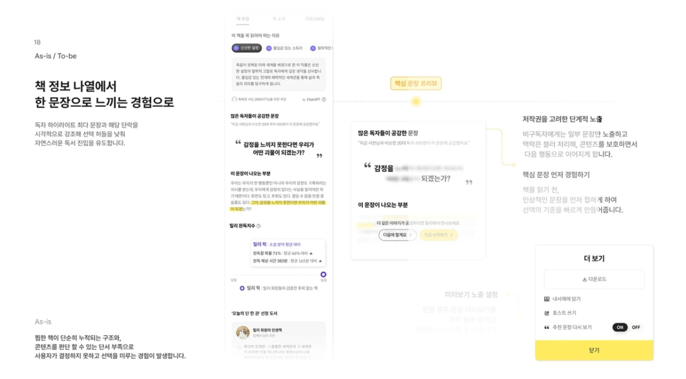
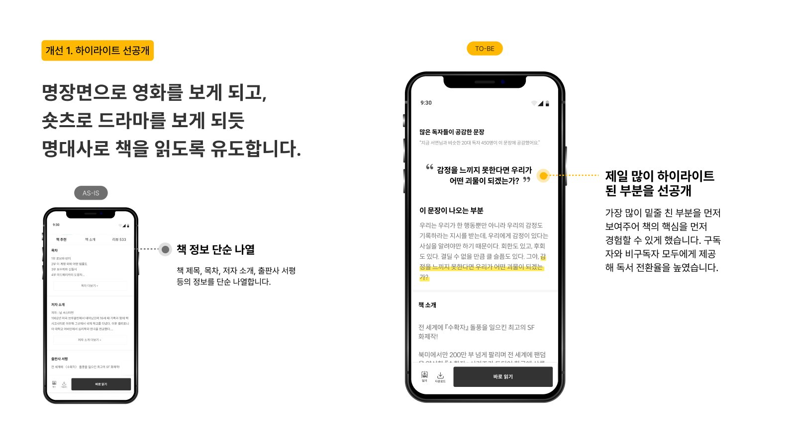
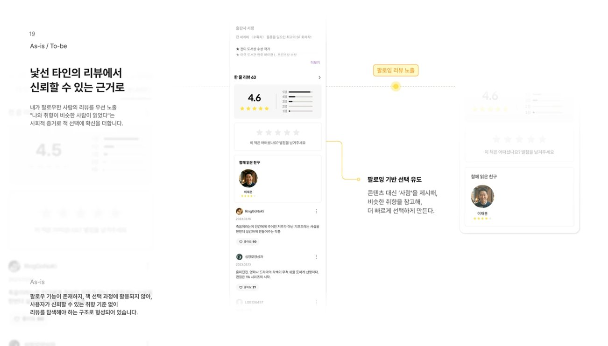
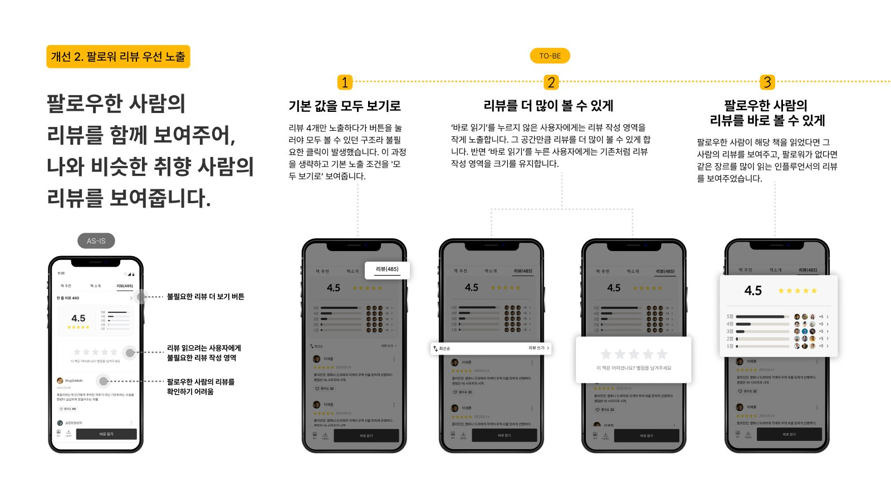

독서는 더 가까워졌지만,
시작은 여전히 어렵다
독서의 중심은 30대, 매체는 모바일로 옮겨 왔습니다.그런데 다른 콘텐츠와 경쟁하면서 시간이 부족해졌고,
앱을 열어도 실제 독서로 이어지지 않는 구조가 보였습니다.
A독서 환경의 변화
- 66.4%
30대 중심의 핵심 독서층 형성
- 59.4%
종이책에서 디지털 독서로 소비 전환
- 23.7%
시간 부족이 독서 미실행의 주요 원인
B밀리의 서재 규모
2025년, 밀리 누적 가입 수
제공 콘텐츠
제공 오디오북
출처: 밀리 리포트 2025
사용자들은 읽을 책을
결정하지 못하고 있었다
앱스토어, 플레이스토어, SNS의 VOC 404건을 사용자 행동 흐름 단계별로 분류했습니다.불편은 독서 자체보다 책을 고르고 읽기 시작하는 순간에 몰려 있었습니다.
탐색 112건 · 선택 45건 · 독서 시작 247건. 탐색에서 쌓인 피로가 '읽기 시작'을 막는 지점으로 이어진다고 해석했습니다.
PROBLEM
책 선택 과정에서
독서가 멈추고 있었다
콘텐츠 탐색 과정에서 선택까지의 시간이 길어지고, 사용자들의 반복적인 비교 속에서 피로를 경험하고 있습니다.
어떻게 하면
책 선택의 부담을 줄이고
독서로 이어지게 할 수 있을까?
탐색이 길어질수록
독서는 미뤄진다
VOC에서 반복된 두 가지 이탈 패턴을 페르소나로 정리했습니다.두 사람 모두 '선택' 직전에 감정이 가장 낮아집니다.
책 선택의 부담을 줄이는
3가지 방법
왼쪽에서 개선안을 선택하면,
휴대폰 위의 AS-IS/TO-BE를 통해 개선 전후 화면을 비교할 수 있습니다.
개인 디벨롭 · 장표와 화면,
솔루션을 다시 다듬기
팀 프로젝트가 끝난 뒤 개인 작업으로 이어서 진행했습니다.포트폴리오 장표를 더 보기 좋게 수정하고,
AS-IS, TO-BE 화면과 두 번째 솔루션을 디벨롭했습니다.
포트폴리오 장표 수정
팀 포트폴리오 장표를 더 보기 좋게 수정했습니다.


- 좌우 레이아웃 통일: 좌우 비율을 5:5로 맞춰 전체적인 시각적 균형을 개선했습니다.
- 제목 가독성 강화: 제목 크기를 키워 핵심 내용이 눈에 잘 들어오도록 수정했습니다.
- 용어 명확화: 모호한 표현을 구체적인 용어로 바꿔 내용을 쉽게 이해할 수 있도록 개선했습니다.
- VOC 가독성 강화: VOC 모음의 크기를 키워 내용을 더 쉽게 확인할 수 있도록 수정했습니다.
AS-IS · TO-BE 화면 디벨롭
개선안의 AS-IS·TO-BE 화면을 디벨롭했습니다.


- 제목 명확화: 솔루션의 핵심이 드러나도록 제목을 수정했습니다.
- AS-IS 가시성 개선: AS-IS 화면을 선명하게 보여주어 리디자인 전후를 쉽게 비교할 수 있도록 했습니다.
- 목업 적용: AS-IS와 TO-BE 화면을 목업에 적용해 전체 레이아웃을 정돈했습니다.
- 솔루션 구성 개선: 사용자 흐름을 고려해 화면 구성을 다듬고, 불필요한 요소를 정리했습니다.
팔로워 리뷰 솔루션 디벨롭
두 번째 솔루션인 팔로워 리뷰 우선 노출을 디벨롭했습니다.


- 솔루션 다양화: 사용자에게 도움이 될 수 있는 해결 방안을 추가했습니다.
- 레이아웃 개선: 각 솔루션의 내용과 UI가 잘 드러나도록 배치했습니다.
- 리뷰 작성과 탐색을 고려한 UI 설계: ‘바로 읽기’를 누른 사용자에게는 리뷰 작성 영역을 크게 노출해 작성에 집중하도록 했습니다. 누르지 않은 사용자에게는 작성 영역을 줄여 더 많은 리뷰를 확인할 수 있도록 구성했습니다.
AI는 속도를, 판단은 제가
프로젝트에서 ChatGPT, Claude, Gemini를 단계별로 나눠 썼습니다.결과를 그대로 쓰지 않고 무엇을 확인하고 고쳤는지 함께 기록했습니다.
앞서 정의한 페르소나, 그 상황, VOC를 바탕으로 사용자 여정 맵을 작성해 줘. 각 단계에 맞는 행동, 감정, 감정 곡선, 페인포인트, 니즈도 함께 정리해 줘.
사용자 여정 맵 단계가 적절하지 않으면 사용자 흐름에 맞게 수정했습니다.
사용자 여정 맵 각 단계의 행동, 감정, 페인포인트, 니즈가 페르소나의 상황과 맞는지도 검토하고 맞지 않은 점이 있으면 직접 보완했습니다.
제공한 데스크 리서치 및 배경 조사 자료를 바탕으로 핵심 인사이트를 도출해 줘.
인사이트가 명확하지 않으면 직접 수정하거나 추가 아이데이션을 요청했습니다. 제안받은 인사이트 중 핵심을 가장 잘 드러내는 것을 선택하고, 필요에 따라 직접 보완했습니다.
Figma 포트폴리오 PDF를 바탕으로 블랙 표지와 밀리 옐로를 활용한 반응형 웹사이트를 만들어 줘. AS-IS와 TO-BE 화면을 직접 전환해 볼 수 있는 프로토타입도 포함해 줘.
Figma 원본과 웹사이트를 비교해 디자인이 다른 부분을 수정했습니다. 간격, 문구, 색상 등 디자인에서 아쉬운 부분도 개선 방향을 구체적으로 제시하며 보완했습니다.
프로젝트 회고
다양한 관점을 통해 문제를 해결
스스로 해결 방안을 찾되, 한계에 부딪힌 지점에서는 경험 많은 팀원과 코치님의 피드백을 적극적으로 활용했습니다. 여러 관점을 반영하며 프로젝트를 더 나은 방향으로 발전시켰습니다.
역할 분담으로
포트폴리오 전체를 다루지 못함
팀 프로젝트에서 솔루션팀과 포트폴리오팀으로 역할을 나누어 진행했습니다. 솔루션팀으로 참여하면서 포트폴리오 전체를 구성하고 다듬는 과정에는 참여하지 못했습니다.
개인 작업으로
프로젝트 포트폴리오의 완성도를 높임
이후 프로젝트에서는 포트폴리오 제작을 맡아 전체 구성을 다듬었습니다. 또한 기존 프로젝트의 장표를 개선하고, AS-IS·TO-BE 화면과 두 번째 솔루션인 팔로워 리뷰를 개인 작업으로 보완했습니다.